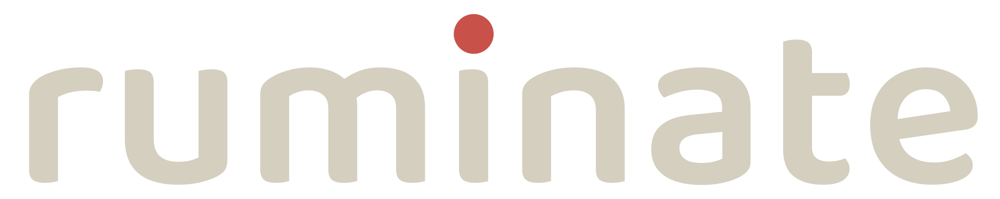

Elke koe
haar eigen
optimum.
Ruminate maakt de data die je bedrijf al heeft inzichtelijk: zie in één oogopslag welke koeien niet optimaal presteren, en wat je vandaag kunt doen.
Join the pilot →Niet elke koe presteert optimaal.
Eén voertabel voor de hele koppel, terwijl iedere koe haar eigen ideale zone heeft. Zit ze daarboven of daaronder, dan blijft er rendement liggen.
Te weinig krachtvoer
Haar potentieel blijft onbenut.
Optimaal
De ideale zone: hier is ze op haar best. Smal, en per koe anders.
Te veel krachtvoer
Verhoogd risico op:
- pensverzuring
- klauwproblemen
- langdurige uitval
Het fundament: ruwvoer
Ook het basisrantsoen aan het voerhek bepaalt of ze haar optimum haalt: voldoende structuur en de juiste energie voor de hele koppel.
Wat onderzoek laat zien
Dit is de cockpit.
De koppel in één oogopslag: wie doet het goed, wie vraagt aandacht, en wat je vandaag kunt doen. Klik gerust rond: demo met voorbeelddata.
Voeradvies voor de komende maanden
Join the pilot.
Het pilotprogramma loopt en er zijn op dit moment nog enkele plekken beschikbaar. Het kost je niets.
Kennismaken & NDA
- We komen langs op het bedrijf
- Vertrouwelijkheid vast in een NDA
- Jouw data blijft van jou
Wij koppelen
- De beschikbare datapunten uit bijv. melkrobot, halsband en CRV
- Koppeling via bijv. JoinData
- Jouw enige actie: ons toestemming geven om de data op te halen — wij regelen de rest
Jij krijgt de inzichten
- Inzicht in hoe je koppel ervoor staat
- Zicht op de koeien die aandacht vragen
- Voeradvies per maand, met een inkooplijst die je deelt met je adviseur of zelf inkoopt
- Waarschuwingen, zoals het hitte-alert met bijbehorend voeradvies
Het team.


Boer, adviseur of onderzoeker?
Bel of mail even.
